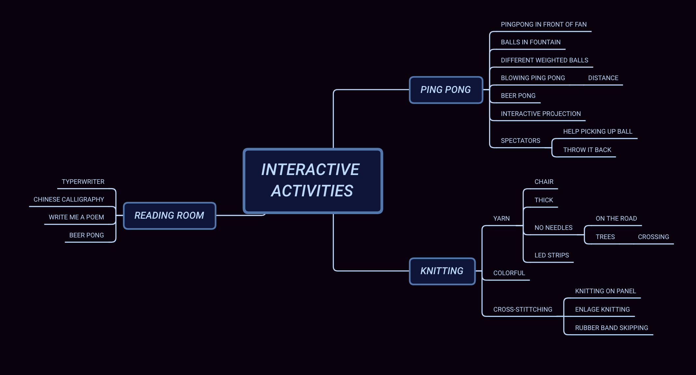
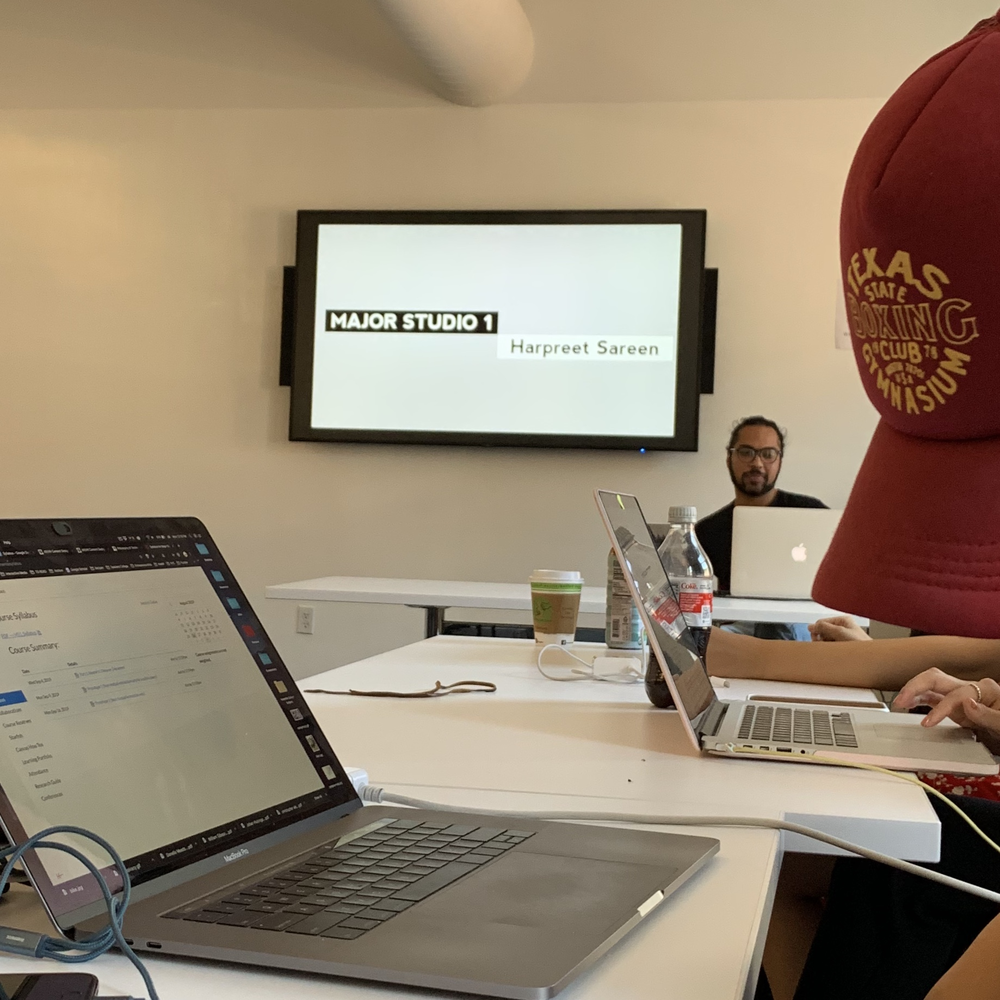

Prompt 1-Five Goals of Wayn
WEEK 1 - SUN, SEPT 1ST, 2019
GOAL 1: Developing my own thinking, methods and concepts of design
This is what identifies me as a designer and pushes me to figure out the design field I want to devote to. To achieve it, I will study and practice in various studios in DT, seek help and communication from teachers and classmates. Hopefully, I could form a rigorous but creative thinking.
GOAL 2: Developing a solid skills set
This would prepare my career as a professional designer. I need certain skills like coding, modeling, prototyping and etc to realize my design or convey some design ideas.
e able to think and work independently and contribute to a team . I would learn in elective courses and dorkshops, communicate and learn from fellow classmates and practice in making projects. Meanwhile, I am supposed to be aware of the industry development.
GOAL 3: Being a good storyteller.
Our world is established from all kinds of physical objects as well as various collective imaginations. Telling a good story requires me to possess adequate knowledge, so I would keep reading, thinking and absorbing. Telling a good story also requires me to have good communication and expression ability, and logical thinking as well. These skills would also help me perform better in teamwork.
GOAL 4: Good taste/aesthetic of design
A designer need to know what good design is first, then he would be able to make good design. I would take advantage of the rich museum resources in NYC, observe and insight into the multicultural city and get inspiration from it. Also, since a lot of fellow students in DT are from an art background, learning from the creative DT community would definitely help me achieve the goal.
GOAL 5: Participate in some projects with social value
I want to be a designer that understands and shoulders certain social responsibility. Pay attention to some social issues, insight into them and combine with what I have learned in courses to find reasonable solutions or just convey ideas.
Posted in CC LECTURE
Instruction Sets for Strangers ——— Design Methods
WEEK 1 - FRI, AUG 30TH, 2019

Why Bryant Park?
Bryant Park is one of the few parks that are mostly enjoyed by local New Yorkers. Being surrounded by
many office buildings, schools, and New York Public Library, you can find many students and young
professionals hanging out at the park. However, the park is also a great place for kids and the elderly.
Throughout the year Bryant Park hosts various activities including sports tournaments, painting
sessions, dancing classes and much more.
Bryant Park is a condensed miniature of New York
itself: people from all different age groups, cultures and backgrounds exist harmoniously
all in one place.
AEIOU


We started by observing some regular activities in Bryant Park.
Obesrvation & Behavioral Mapping


Bryant Park is a space that suggests interactions and socialization - mostly human but also animals.
After walking around the park and observing some different activities, we realized that - while
Bryant Park is able to bring all different kinds of people together, they rarely interact
with one another, - there isn't much reason to. We'd like to give them a reason. A lot
of people describe New Yorker as rude, cold-hearted and impatient. We want to find out if that
really is the case.
Brainstorming
Guiding Questions:
How can we reinvent the purpose of an activity/game that changes the way people interact and their
understanding of the game?
How can we create a relaxing interactive experience among different groups of passersby but costs
them little time?

Knitting was one of the activities that stood out for us. Knitting is known as a long, repetitive
process that requires a lot of patience and commitment from one person. Usually, we associate this
activity with moms or grandmas. We thought, how can we revolutionize this activity, reverse the
making process and the maker:
- Contributed by many different people from different background/culture/generation
- Short commitment - stitch one and go
- Freeform
- Visual interactions
Concept Sketch
The idea is that we would enlarge the size of cross-stitch, setting up a big panel with thick yarn for passersby to knit.

Posted in Major Studio 01
DAY ONE!
MON, AUG 26TH, 2019
Great start of the semester! My journey in Parsons MFA Design & Technology officially started!! Nice
to meet you Harpreet! And thank you for the first class!

Posted in Major Studio 01